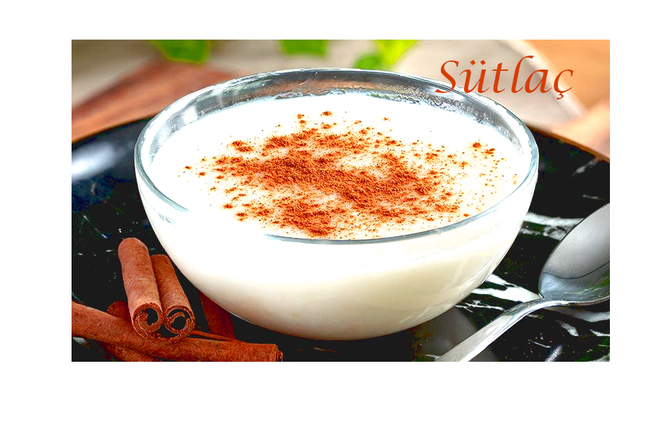
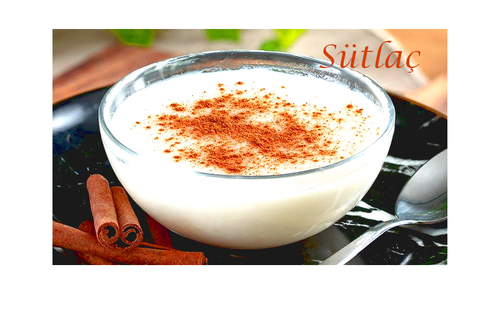

Sütlaç
 

Turkish Baked Rice Pudding
Ingredients
| Ingredient | Amount |
|---|---|
| Milk | 4 3/4 cups, divided |
| Sugar | 1 cup |
| Uncooked Rice | 1/2 cup |
| Vanilla Extract | 1 teaspoon |
| Cornstarch | 2 tablespoons |
| Egg | Only 1 |
Recipe
- Preheat the oven to 350 F (180 C).
- Wash the rice and place it in a large saucepan with enough water to cover it by about 1/2 inch. Bring it to a boil and reduce the heat. Let the rice simmer gently until the rice is soft, about 5 minutes.
- Add 3 3/4 cups milk, the sugar, and vanilla extract to the rice. Bring the mixture to a boil. Reduce the heat and let it boil very gently for about 10 minutes.
- Using a whisk, mix together the remaining 1 cup milk and the cornstarch in a small bowl until smooth. While stirring, gradually pour this mixture into the rice. Turn up the heat and continue stirring the pudding until scalding.
- When the pudding thickens, continue to stir and cook for about 2 minutes more. Remove from the heat and fill small, ovenproof dessert cups, clay cups, or disposable aluminum pudding cups with the hot mixture.
- Using a spoon, drizzle a small amount of the egg yolk and milk mixture into the center of each dessert cup. With the back of the spoon, use a light, circular motion to swirl the egg yolk from the center to the edges so it spreads evenly over the top of each cup.
- Bake the pudding cups until the tops are nicely browned, about 20 minutes. Let the cups cool at room temperature and then refrigerate for several hours before serving.
Taviloglu, E. Turkish Baked Rice Puding. Retrieved from https://www.thespruceeats.com